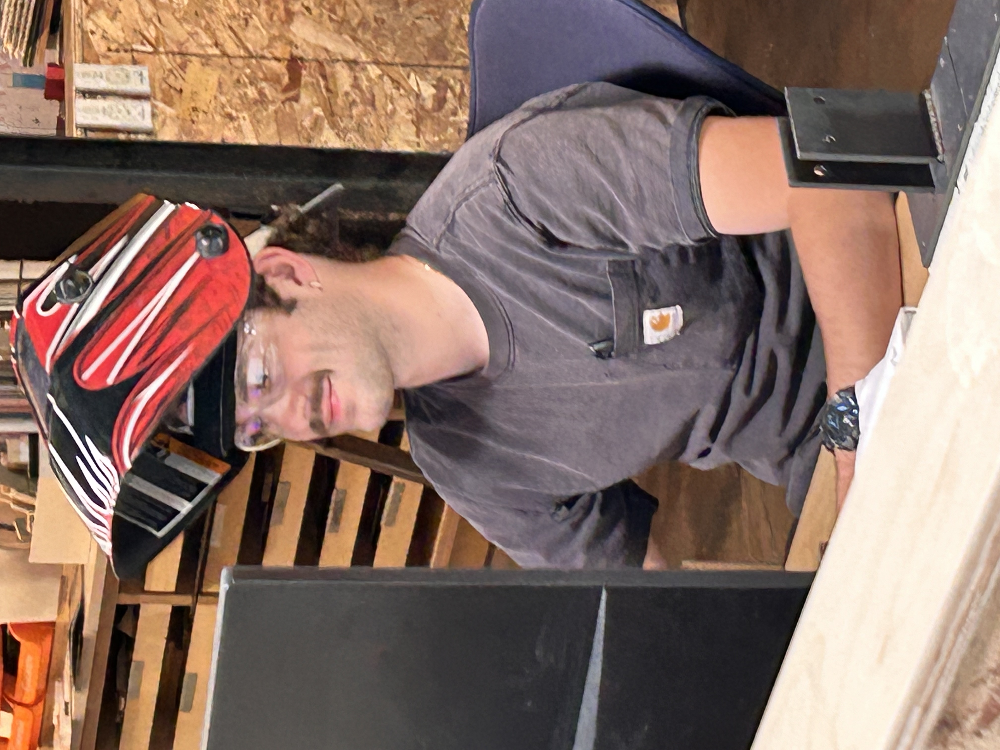

About
Design shaped by craft, place, and generosity.
My name is Wyatt Holtzinger, and I grew up in North Denver, where my family has lived for six generations. Growing up in this area shaped many of my values and ideas.
As a child, I was often enlisted by family members to help with various tasks. For instance, I learned to work with leather and mow lawns at my grandpa's business, Opa's Sweat Shop (O.S.S.). My dad hired me at Shopworks in the sixth grade, where I spent an entire summer pulling weeds. After that, I developed my metalworking skills by making planter boxes for a new venture called Magnetic.
I later took two construction jobs with I-Kota and Calcon, which taught me a great deal about commercial job sites.
One important lesson I learned from my upbringing and mentors is the value of living generously and being charitable with my time. This principle is something I hope to carry into my career, as I believe it leads to meaningful work.
Architecture student at CU Boulder.
Architecture, fabrication, furniture, metalwork, and construction-informed design.
Material-led, image-focused, and rooted in carrying ideas from concept through making.